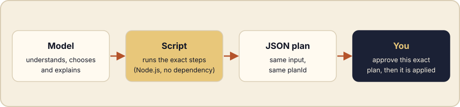

Ask a model to list the 170 files an installation would create, and you will get an answer that looks right. Ask it again tomorrow, and the answer may differ. Nothing is wrong with the model: counting and listing are simply not what it is for.
The idea in one picture
A harness is more than prompts. The most reliable ones hand every exact, repeatable step to a deterministic tool, and keep the model for what only a model can do: understand the request, choose among options, and explain the result. Between them sits a document you can read, usually a plan in JSON.

What you see: the same plan twice
In your assistant, you write: “prepare the AI-KIDO installation on this project, twice in a row, and show me the plan identifier”. The version 1.5 installer is a script: the assistant runs it twice on the same project and only displays the plan identifier. Here is the command it runs, for those who want to look under the hood:
for i in 1 2; do
node aikido-dist/claude-code/scripts/bootstrap-plan.mjs \
--root . --package aikido-dist/claude-code --mode STANDARD \
| node -pe 'JSON.parse(require("fs").readFileSync(0, "utf8")).planId'
done60314f9d5a6f5213c406498c4263213326b94294c3d7398a358640b8a5f5ff46
60314f9d5a6f5213c406498c4263213326b94294c3d7398a358640b8a5f5ff46The identifier is a hash of the whole plan: project path, mode, assistant, package version and every planned file. Yours will therefore differ from the one above, but on the same project it stays identical from one run to the next. If a single planned path changed, the identifier would change too and the apply step would refuse the old one.
What you see: a site that rewrites nothing
You now ask the assistant to regenerate this site’s News pages. They are produced from a data file by a dependency-free Node.js script. On an already up-to-date site, the assistant tells you nothing was written, then runs the tests, which also check that the versioned pages are identical to what the script would generate. Under the hood:
node scripts/build-news.mjs
node --test scripts/{"ok":true,"items":4,"files":13,"written":[]}
...
ℹ tests 9
ℹ pass 9
ℹ fail 0- 2 / 2identical plan identifiers over two runs
- 0files rewritten when the site was already up to date
- 9 / 9generator tests passing
Try it
- List the steps of your own workflow that never need judgment: counting, listing, renaming, validating.
- Move each one into a script that prints a short JSON result.
- Let the model read that result, decide, and explain. The four principles are on the harness creation page.